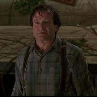
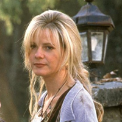
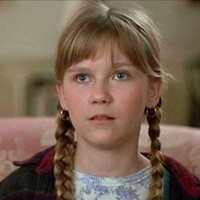
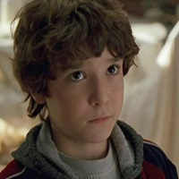
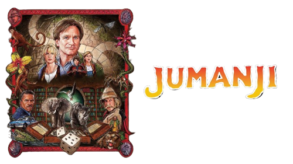

Main Characters
Alan Parish
Sarah Whittle
Judy Shepherd
Peter Shepherd



Sarah Whittle
Judy Shepherd
Peter Shepherd
"Jumanji" (1995) is a fantasy adventure film that centers on a magical board game that brings jungle hazards to life with every roll of the dice. The story begins in 1969 when a young boy named Alan Parrish discovers the mysterious game and starts playing with his friend, Sarah Whittle. During the game, Alan is magically transported into the jungle within the game, while Sarah is left traumatized by the events.
Twenty-six years later, siblings Judy and Peter Shepherd move into the now-abandoned Parrish mansion with their aunt. They find the Jumanji game and begin playing, inadvertently releasing Alan, who has survived the jungle for decades. Together, the three attempt to finish the game to reverse all its effects, including the chaos and creatures it unleashes into the real world.
As they play, they encounter numerous dangers, including wild animals, a monsoon, quicksand, and a relentless hunter named Van Pelt. They also track down Sarah, now an adult, to help them complete the game. Throughout their journey, they face various challenges and work through their fears and past traumas.
The film culminates in a climactic final roll of the dice, which results in Alan winning the game. This victory causes everything to revert back to 1969, giving Alan and Sarah a chance to rewrite their past. They throw Jumanji into a river to prevent others from playing it. In the present day, now as a married couple, Alan and Sarah meet Judy and Peter and prevent the tragic events that would have led to their playing the game, ensuring a happier future for all involved.
